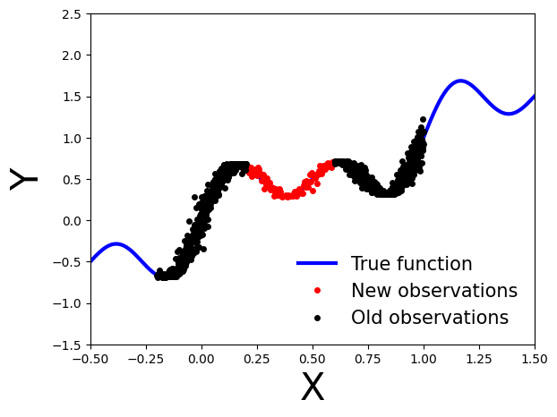

Authors: Ilze Amanda Auzina, Leonard Bereska, Alexander Timans and Eric Nalisnick
Bayesian Neural Networks
A Bayesian neural network is a probabilistic model that allows us to estimate uncertainty in predictions by representing the weights and biases of the network as probability distributions rather than fixed values. This allows us to incorporate prior knowledge about the weights and biases into the model, and update our beliefs about them as we observe data.
Mathematically, a Bayesian neural network can be represented as follows:
Given a set of input data \(x\), we want to predict the corresponding output \(y\). The neural network represents this relationship as a function \(f(x, \theta)\), where \(\theta\) are the weights and biases of the network. In a Bayesian neural network, we represent the weights and biases as probability distributions, so \(f(x, \theta)\) becomes a probability distribution over possible outputs:
where \(p(y|x, \theta)\) is the likelihood function, which gives the probability of observing \(y\) given \(x\) and \(\theta\), and \(p(\theta|\mathcal{D})\) is the posterior distribution over the weights and biases given the observed data \(\mathcal{D}\).
To make predictions, we use the posterior predictive distribution:
where \(x^*\) is a new input and \(y^*\) is the corresponding predicted output.
To estimate the (intractable) posterior distribution \(p(\theta|\mathcal{D})\), we can use either Markov Chain Monte Carlo (MCMC) or Variational Inference (VI).
Simulate data
Let’s generate noisy observations from a sinusoidal function.
Let’s install Pyro now. You may have to restart the runtime after this step.
!pip install pyro-ppl
Looking in indexes: https://pypi.org/simple, https://us-python.pkg.dev/colab-wheels/public/simple/
Requirement already satisfied: pyro-ppl in /usr/local/lib/python3.9/dist-packages (1.8.4)
Requirement already satisfied: numpy>=1.7 in /usr/local/lib/python3.9/dist-packages (from pyro-ppl) (1.22.4)
Requirement already satisfied: pyro-api>=0.1.1 in /usr/local/lib/python3.9/dist-packages (from pyro-ppl) (0.1.2)
Requirement already satisfied: opt-einsum>=2.3.2 in /usr/local/lib/python3.9/dist-packages (from pyro-ppl) (3.3.0)
Requirement already satisfied: torch>=1.11.0 in /usr/local/lib/python3.9/dist-packages (from pyro-ppl) (2.0.0+cu118)
Requirement already satisfied: tqdm>=4.36 in /usr/local/lib/python3.9/dist-packages (from pyro-ppl) (4.65.0)
Requirement already satisfied: networkx in /usr/local/lib/python3.9/dist-packages (from torch>=1.11.0->pyro-ppl) (3.1)
Requirement already satisfied: filelock in /usr/local/lib/python3.9/dist-packages (from torch>=1.11.0->pyro-ppl) (3.11.0)
Requirement already satisfied: sympy in /usr/local/lib/python3.9/dist-packages (from torch>=1.11.0->pyro-ppl) (1.11.1)
Requirement already satisfied: typing-extensions in /usr/local/lib/python3.9/dist-packages (from torch>=1.11.0->pyro-ppl) (4.5.0)
Requirement already satisfied: triton==2.0.0 in /usr/local/lib/python3.9/dist-packages (from torch>=1.11.0->pyro-ppl) (2.0.0)
Requirement already satisfied: jinja2 in /usr/local/lib/python3.9/dist-packages (from torch>=1.11.0->pyro-ppl) (3.1.2)
Requirement already satisfied: lit in /usr/local/lib/python3.9/dist-packages (from triton==2.0.0->torch>=1.11.0->pyro-ppl) (16.0.1)
Requirement already satisfied: cmake in /usr/local/lib/python3.9/dist-packages (from triton==2.0.0->torch>=1.11.0->pyro-ppl) (3.25.2)
Requirement already satisfied: MarkupSafe>=2.0 in /usr/local/lib/python3.9/dist-packages (from jinja2->torch>=1.11.0->pyro-ppl) (2.1.2)
Requirement already satisfied: mpmath>=0.19 in /usr/local/lib/python3.9/dist-packages (from sympy->torch>=1.11.0->pyro-ppl) (1.3.0)
Bayesian Neural Network with Gaussian Prior and Likelihood
Our first Bayesian neural network employs a Gaussian prior on the weights and a Gaussian likelihood function for the data. The network is a shallow neural network with one hidden layer.
To be specific, we use the following prior on the weights \(\theta\):
\(p(\theta) = \mathcal{N}(\mathbf{0}, 10\cdot\mathbb{I}),\) where \(\mathbb{I}\) is the identity matrix.
To train the network, we define a likelihood function comparing the predicted outputs of the network with the actual data points:
Here, \(y_i\) represents the actual output for the \(i\)-th data point, \(x_i\) represents the input for that data point, \(\sigma\) is the standard deviation parameter for the normal distribution and \(NN_{\theta}\) is the shallow neural network parameterized by \(\theta\).
Note that we use \(\sigma^2\) instead of \(\sigma\) in the likelihood function because we use a Gaussian prior on \(\sigma\) when performing variational inference and then want to avoid negative values for the standard deviation.
import pyroimport pyro.distributions as distfrom pyro.nn import PyroModule, PyroSampleimport torch.nn as nnclass MyFirstBNN(PyroModule):def__init__(self, in_dim=1, out_dim=1, hid_dim=5, prior_scale=10.):super().__init__()self.activation = nn.Tanh() # or nn.ReLU()self.layer1 = PyroModule[nn.Linear](in_dim, hid_dim) # Input to hidden layerself.layer2 = PyroModule[nn.Linear](hid_dim, out_dim) # Hidden to output layer# Set layer parameters as random variablesself.layer1.weight = PyroSample(dist.Normal(0., prior_scale).expand([hid_dim, in_dim]).to_event(2))self.layer1.bias = PyroSample(dist.Normal(0., prior_scale).expand([hid_dim]).to_event(1))self.layer2.weight = PyroSample(dist.Normal(0., prior_scale).expand([out_dim, hid_dim]).to_event(2))self.layer2.bias = PyroSample(dist.Normal(0., prior_scale).expand([out_dim]).to_event(1))def forward(self, x, y=None): x = x.reshape(-1, 1) x =self.activation(self.layer1(x)) mu =self.layer2(x).squeeze() sigma = pyro.sample("sigma", dist.Gamma(.5, 1)) # Infer the response noise# Sampling modelwith pyro.plate("data", x.shape[0]): obs = pyro.sample("obs", dist.Normal(mu, sigma * sigma), obs=y)return mu
Define and run Markov chain Monte Carlo sampler
To begin with, we can use MCMC to compute an unbiased estimate of \(p(y|x, \mathcal{D}) = \mathbb{E}_{\theta \sim p(\theta|\mathcal{D})}\big[p(y|x,\theta)\big]\) through Monte Carlo sampling. Specifically, we can approximate \(\mathbb{E}_{\theta \sim p(\theta|\mathcal{D})}\big[p(y|x,\theta)\big]\) as follows: \[\mathbb{E}_{\theta \sim p(\theta|\mathcal{D})}\big[p(y|x,\theta)\big] \approx \frac{1}{N} \sum_{i=1}^{N} p(y|x,\theta_{i}),\] where \(\theta_{i} \sim p(\theta_i|\mathcal{D}) \propto p(\mathcal{D}|\theta)p(\theta)\) are samples drawn from the posterior distribution. Because the normalizing constant is intractable, we require MCMC methods like Hamiltonian Monte Carlo to draw samples from the non-normalized posterior.
\(p(y_i| x_i, \theta) = \mathcal{N}\big(NN_{\theta}(x_i), \sigma^2\big)\), with \(\sigma \sim \Gamma(0.5,1)\).
Implement the deep Bayesian neural network and run MCMC to obtain posterior samples. Compute and plot the predictive distribution. Use the following network architecture: Number of hidden layers: 5, Number of hidden units per layer: 10, Activation function: Tanh, Prior scale: 5.
class BNN(PyroModule):def__init__(self, in_dim=1, out_dim=1, hid_dim=10, n_hid_layers=5, prior_scale=5.):super().__init__()self.activation = nn.Tanh() # could also be ReLU or LeakyReLUassert in_dim >0and out_dim >0and hid_dim >0and n_hid_layers >0# make sure the dimensions are valid# Define the layer sizes and the PyroModule layer listself.layer_sizes = [in_dim] + n_hid_layers * [hid_dim] + [out_dim] layer_list = [PyroModule[nn.Linear](self.layer_sizes[idx -1], self.layer_sizes[idx]) for idx inrange(1, len(self.layer_sizes))]self.layers = PyroModule[torch.nn.ModuleList](layer_list)for layer_idx, layer inenumerate(self.layers): layer.weight = PyroSample(dist.Normal(0., prior_scale * np.sqrt(2/self.layer_sizes[layer_idx])).expand( [self.layer_sizes[layer_idx +1], self.layer_sizes[layer_idx]]).to_event(2)) layer.bias = PyroSample(dist.Normal(0., prior_scale).expand([self.layer_sizes[layer_idx +1]]).to_event(1))def forward(self, x, y=None): x = x.reshape(-1, 1) x =self.activation(self.layers[0](x)) # input --> hiddenfor layer inself.layers[1:-1]: x =self.activation(layer(x)) # hidden --> hidden mu =self.layers[-1](x).squeeze() # hidden --> output sigma = pyro.sample("sigma", dist.Gamma(.5, 1)) # infer the response noisewith pyro.plate("data", x.shape[0]): obs = pyro.sample("obs", dist.Normal(mu, sigma * sigma), obs=y)return mu
Train the deep BNN with MCMC…
# define model and datamodel = BNN(hid_dim=10, n_hid_layers=5, prior_scale=5.)# define MCMC samplernuts_kernel = NUTS(model, jit_compile=False)mcmc = MCMC(nuts_kernel, num_samples=50)mcmc.run(x_train, y_train)
We will now move on to variational inference. Since the normalized posterior probability density \(p(\theta|\mathcal{D})\) is intractable, we approximate it with a tractable parametrized density \(q_{\phi}(\theta)\) in a family of probability densities \(\mathcal{Q}\). The variational parameters are denoted by \(\phi\) and the variational density is called the “guide” in Pyro. The goal is to find the variational probability density that best approximates the posterior by minimizing the KL divergence \[KL\big(q_{\phi}(\theta)||p(\theta|\mathcal{D})\big)\] with respect to the variational parameters. However, directly minimizing the KL divergence is not tractable because we assume that the posterior density is intractable. To solve this, we use Bayes theorem to obtain \[
\log p(\mathcal{D}|\theta) = KL\big(q_{\phi}(\theta)||p(\theta|\mathcal{D})\big) + ELBO(q_{\phi}(\theta)),
\] where \(ELBO(q_{\phi}(\theta))\) is the Evidence Lower Bound, given by \[
ELBO(q_{\phi}(\theta)) = \mathbb{E}_{\theta \sim q_{\phi}(\theta)}\big[\log p(y|x,\theta) \big] - KL\big(q_{\phi}(\theta) || p(\theta) \big).
\] By maximizing the ELBO, we indirectly minimize the KL divergence between the variational probability density and the posterior density.
Set up for stochastic variational inference with the variational density \(q_{\phi}(\theta)\) by using a normal probability density with a diagonal covariance matrix:
UserWarning: color is redundantly defined by the 'color' keyword argument and the fmt string "ko" (-> color='k'). The keyword argument will take precedence.
plt.plot(x_new, y_new, 'ko', markersize=4, label="New observations", c="r")

Bayesian update
How can we perform a Bayesian update on the model using variational inference when new observations become available?
We can use the previously calculated posterior probability density as the new prior and update the posterior with the new observations. Specifically, the updated posterior probability density is given by:
Note that we want to update our model using only the new observations \(\mathcal{D}'\), relying on the fact that the variational density used as our new prior carries the necessary information on the old observations \(\mathcal{D}\).
Implementation in Pyro
To implement this in Pyro, we can extract the variational parameters (mean and standard deviation) from the guide and use them to initialize the prior in a new model that is similar to the original model used for variational inference.
From the Gaussian guide we can extract the variational parameters (mean and standard deviation) as:
mu = guide.get_posterior().meansigma = guide.get_posterior().stddev
Exercise 2.1 Learn a model on the old observations
First, as before, we define a model using Gaussian prior \(\mathcal{N}(\mathbf{0}, 10\cdot \mathbb{I})\).
Train a model MyFirstBNN on the old observations \(\mathcal{D}\) using variational inference with AutoDiagonalNormal() as guide.
from pyro.optim import Adampyro.set_rng_seed(42)pyro.clear_param_store()model = MyFirstBNN()guide = AutoDiagonalNormal(model)optim = Adam({"lr": 0.03})svi = pyro.infer.SVI(model, guide, optim, loss=Trace_ELBO())num_iterations =10000progress_bar = trange(num_iterations)for j in progress_bar: loss = svi.step(x_train, y_train) progress_bar.set_description("[iteration %04d] loss: %.4f"% (j +1, loss /len(x_train)))
Next, we can extract the variational parameters (mean and standard deviation) from the guide and use them to initialize the prior in a new model that is similar to the original model used for variational inference.
# Extract variational parameters from guidemu = guide.get_posterior().mean.detach()stddev = guide.get_posterior().stddev.detach()
for name, value in pyro.get_param_store().items():print(name, pyro.param(name))
Exercise 2.2 Initialize a second model with the variational parameters
Define a new model similar to MyFirstBNN(PyroModule), that takes the variational parameters and uses them to initialize the prior.
class UpdatedBNN(PyroModule):def__init__(self, mu, stddev, in_dim=1, out_dim=1, hid_dim=5):super().__init__()self.mu = muself.stddev = stddevself.activation = nn.Tanh()self.layer1 = PyroModule[nn.Linear](in_dim, hid_dim)self.layer2 = PyroModule[nn.Linear](hid_dim, out_dim)self.layer1.weight = PyroSample(dist.Normal(self.mu[0:5].unsqueeze(1), self.stddev[0:5].unsqueeze(1)).to_event(2))self.layer1.bias = PyroSample(dist.Normal(self.mu[5:10], self.stddev[5:10]).to_event(1))self.layer2.weight = PyroSample(dist.Normal(self.mu[10:15].unsqueeze(0), self.stddev[10:15].unsqueeze(0)).to_event(2))self.layer2.bias = PyroSample(dist.Normal(self.mu[15:16], self.stddev[15:16]).to_event(1))# 17th parameter is parameter sigma from the Gamma distributiondef forward(self, x, y=None): x = x.reshape(-1, 1) x =self.activation(self.layer1(x)) mu =self.layer2(x).squeeze() sigma = pyro.sample("sigma", dist.Gamma(.5, 1))with pyro.plate("data", x.shape[0]): obs = pyro.sample("obs", dist.Normal(mu, sigma * sigma), obs=y)return mu
Exercise 2.3 Perform variational inference on the new model
Then perform variational inference on this new model using the new observations and plot the predictive distribution. What do you observe? How does the predictive distribution compare to the one obtained in Exercise 2.1?